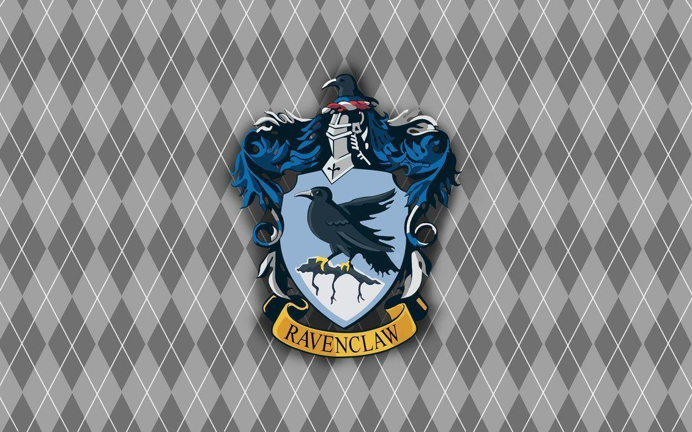

Portal Hogwarts © - 2026.

Corvinal é uma das quatro casas de Hogwarts famosa por exaltar inteligência, criatividade, sabedoria e curiosidade. Fundada por Rowena Ravenclaw, a casa acolhe alunos com grande vontade de aprender, pensamento criativo e amor pelo conhecimento. Suas cores são azul e bronze, e seu símbolo é a águia, representando visão e inteligência. A sala comunal da Corvinal fica em uma das torres mais altas de Hogwarts e só pode ser acessada após responder corretamente a enigmas e perguntas desafiadoras. Os estudantes da Corvinal costumam se destacar por sua criatividade e dedicação aos estudos. Entre os membros mais conhecidos da casa estão Luna Lovegood e Cho Chang. A casa é apreciada por formar bruxos inteligentes, originais e sempre em busca de novos conhecimentos.
Portal Hogwarts © - 2026.